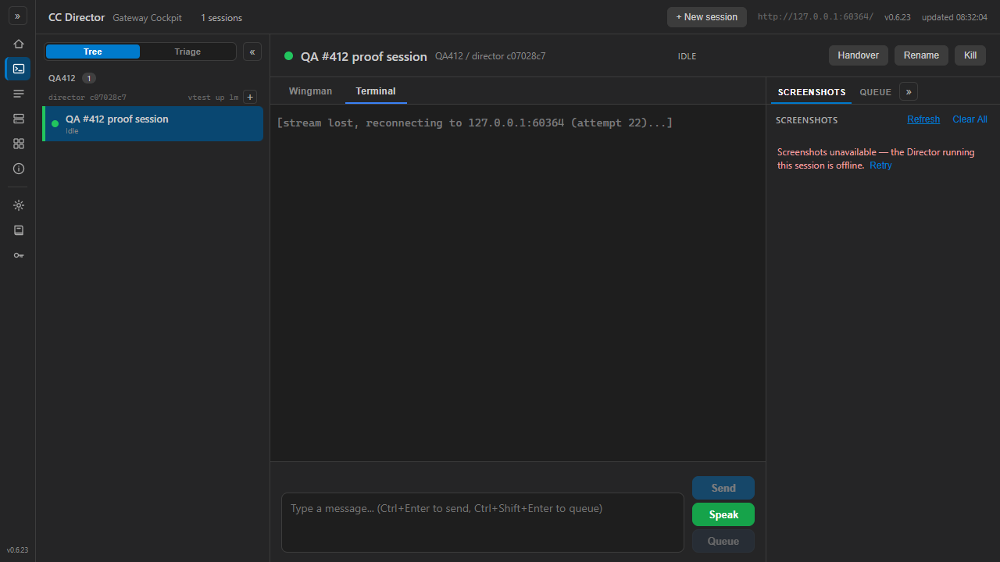
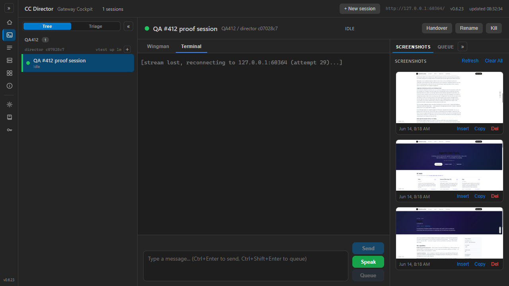

The QA session built the PR branch in its own checkout (D:\ReposFred\cc-director-wt-412), allocated slot 8,
and ran two independent proof surfaces, neither reusing the developer's binaries or screenshots:
ScreenshotListProxyRoundTripTests plus the existing
screenshot/proxy suite were re-run by QA: 34 passed, 0 failed. These stand up a real GatewayHost and a
real stub Director (Kestrel) over real HTTP and prove the LIST leg round-trips with ?count= carried through,
and that an offline owner surfaces as 503.GatewayHost (fastPath shots/shot legs) plus a
stub Director that serves /screenshots (list) and /screenshots/file (bytes), registered the
Director with a heartbeat, and pointed the PATCHED Cockpit web app at it. The Cockpit was driven through the Gateway
front door (one-URL origin) with Playwright. The stub Director can 503 ONLY the screenshot legs while staying reachable
for the roster/ownership legs — reproducing the issue's exact condition (the session is reachable for other legs at
the same moment the screenshots tab 503s).The running build identity in the browser was 0.6.23+06664f25b5fbbe935fc12839d428b879c801c5fb — the PR HEAD commit.
| AC | Result | Expected vs Actual / evidence |
|---|---|---|
| AC1 diagnosis pinned | PASS | The [SessionWsProxy] ... leg=shots line names the cause. Captured from the user's REAL running Gateway:
the owner resolved (resolved director=c99a103c... -> https://soren-north...:7883/screenshots)
then -> 503 (forwarder error Request) = reason (c) forwarder error. NOT 404 (no owner) and NOT
"no usable endpoint". See qa/qa-ac1-gateway-shots-leg.log. |
| AC2 loads when reachable | PASS | Expected: the tab loads the list and renders thumbnails, no 503, no error banner, while the same session is reachable.
Actual: through the PATCHED Gateway, GET /sessions/{sid}/screenshots returned HTTP 200 and the
Cockpit Screenshots tab rendered 3 thumbnails with NO error banner while the session was selected and IDLE/green.
qa/qa-ac2-ac3-ac6-populated.png. |
| AC3 count correct | PASS | Expected: panel count == files in the owning Director's folder. Actual: the Director's GET /screenshots
returned total:3 and the panel rendered exactly 3 cards (shot-001/002/003.png). Cross-checked against the
folder. qa/qa-ac2-ac3-ac6-populated.png. |
| AC4 graceful offline message | PASS | Expected: when the owning Director is unreachable for screenshots, a human-readable message + Retry, NOT the raw 503
string. Actual: with the session STILL selected and reachable for other legs (roster=1, session-detail 200) while only
the screenshots leg 503'd, the panel showed "Screenshots unavailable — the Director running this session is
offline." with a Retry button. The raw "Response status code does not indicate success: 503" string was NOT shown.
qa/qa-ac4-offline-message.png. |
| AC5 Retry recovers | PASS | Expected: after the Director is reachable again, Retry reloads the list with no reselection/page reload. Actual: with
the screenshots leg restored, clicking Retry reloaded the 3 thumbnails in place — same selected session,
no page reload, offline message gone. The Gateway shots leg recovered 503->200 (fastPath self-heal).
qa/qa-ac5-after-retry.png. |
| AC6 no regression (View/Copy) | PASS | Expected: on a loaded list, View and Copy still work. Actual: each loaded card kept Insert / Copy / Del and a clickable
thumbnail; the thumbnail bytes served HTTP 200 image/png through the fastPath'd shot bytes leg
(verified by curl: 200, image/png, 531576 bytes, and by the rendered thumbnails in the browser).
qa/qa-ac2-ac3-ac6-populated.png. |
2026-06-14 07:15:10 [SessionWsProxy] open leg=shots sid=c748027a-... query=?count=100 client=127.0.0.1 2026-06-14 07:15:10 [SessionWsProxy] leg=shots sid=c748027a-... resolved director=c99a103c-... -> https://soren-north...:7883/screenshots 2026-06-14 07:15:10 [SessionWsProxy] leg=shots sid=c748027a-... director=c99a103c-... -> 503 (forwarder error Request)


dotnet build cc-director.sln — 0 Warnings, 0 Errors.DictationEndpointTests.FullPipeline_transcribes_phase0_clip2_with_realtime_provider) is a real-network
OpenAI realtime-transcription test ("got 0 partial transcripts"); it is UNRELATED to this PR (which touches only the
screenshots proxy leg + Cockpit gallery UX) and is a pre-existing network-provider flake, not a regression.docs/cencon/ update
required.VERIFIED — all 6 acceptance criteria met. Independently reproduced by QA.